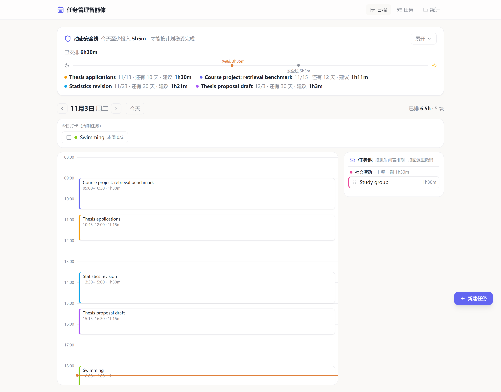
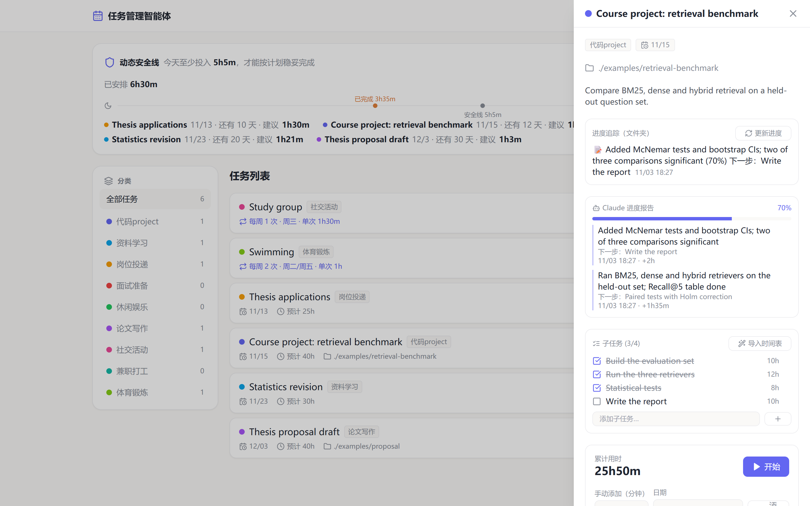
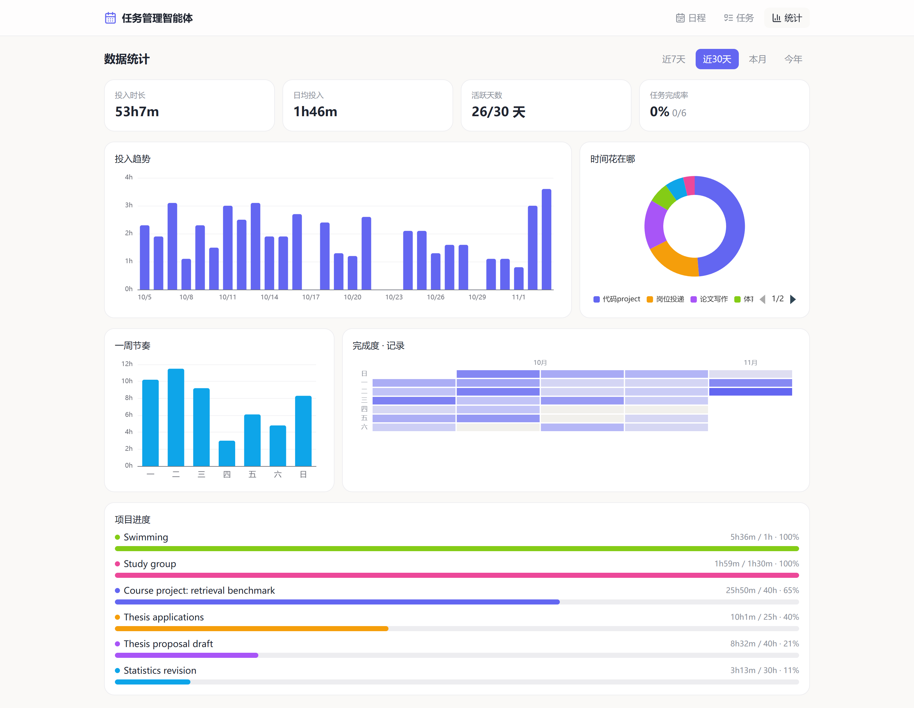

Project 1 · Python, Claude API, nuScenes · Oct 2026
DriveAgent: where does an LLM actually help a driving agent?
I built a tool-using LLM agent on the nuScenes driving dataset and compared it with simpler methods on held-out test sets. Each test was run once, under rules written down in advance.
What the system does with a request
- The LLM only structures. It turns a passenger's words into fields: which object, what request, where to stop, any explicit rule-breaking.
- Code decides. Deterministic rules check those fields against the map and choose to comply, adjust, refuse or ask. On 286 natural requests this was right 89.9% of the time, against 59.8% for keywords with the same code.
- Ask instead of guess. On 148 fresh crowd-sourced commands, silent wrong actions fell from 44.6% (keywords) to 8.8%.
- Measured honestly. An LLM judge was used only after it agreed with human labels in 95% of cases. Results come with scene-level bootstrap confidence intervals and McNemar tests.


Project 2 · TypeScript, Node.js, React · Oct 2026
Task Planner: a full-stack app that Claude Code sessions report to
A local planner I use every day. It lays out the day on a timeline, works out how much I need to do today to meet each deadline, tracks time and shows statistics. When I work on a project in another Claude Code session, that session sends a progress report to the planner's API, and the task updates itself.
I wrote the specification and designed the interaction. The code was written with Claude Code. The interface is in Chinese because I built it for myself; the screenshots use demo data.



How it fits together
- Front end: React 18, TypeScript, Vite, Tailwind, TanStack Query, ECharts and drag-and-drop scheduling.
- Back end: Express and TypeScript, Prisma with SQLite (10 data models), 11 REST route groups and zod validation.
- Progress API: other sessions
POSTa JSON report. The server validates it, applies it, stores the old values for undo, and offers a dry-run preview. If the server is offline, reports wait in an inbox and are applied on the next start. - Daily check: a script asks the local Claude Code CLI whether each tracked folder made real progress, judging from file diffs only.
POST /api/progress-reports
{
"schema": "planner.progress/v1",
"taskId": 1,
"progress": { "summary": "Added McNemar tests and bootstrap CIs", "percent": 70,
"next": ["Write the report"] },
"subtasks": [{ "title": "Statistical tests", "done": true }],
"timeSpent": { "minutes": 120 }
}